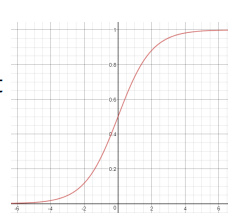

Classification
Naive Bayes Classification
Bayes의 법칙에 기반해 사후확률을 이용해 분류
장점
- 간단하고 빠르며 정확
- computation cost 작음 (빠름)
- 큰 데이터셋에 적합
- 연속형보다 이산형 데이터에서 성능 좋음
- Multiple class 예측을 위해서도 사용 가능
단점
- 사건 간에 독립성이 있어야 함
Logistic Regression Classification
- 이진분류기

-
분류함수로
Sigmoid함수 사용 -
비용함수로 평균제곱오차 사용하지 않음

- 위와같이 울퉁불퉁해서 글로벌 미니멈을 못찾음
- 따라서 새로운 비용함수인
크로스 엔트로피를 비용함수로 사용
Multinomal Regression Classification
- 종속변수가 범주형이면서 3개 이상의 범주를 가질때 적용
- 예) 대학교로 진학할 때 어떤 전공이 인기있는지
- 사람들이 어떤 혈액형을 가지고 있는지
- 모두 통계적인 분류
- 분류함수로
Softmax함수 사용
K-nearest neighbor (KNN)

- 새로운 데이터를 입력받으면 가장 가까이 있는 것이 무엇이냐를 중심으로 새로운 데이터의 종류를 정해줌
- 주변의 K개의 갯수를 보고 판단 → KNN이라고 부름
- K → 주변의 데이터 갯수
특징
- 학습단계에서는 실질적인 학습이 일어나지 않고 데이터만 저장
- 학습데이터가 크면 메모리 문제
- 게으른 학습 (Lazy learning)
- 새로운 데이터가 주어지면 저장된 데이터 이용해 학습
- 시간이 많이 걸림
- 데이터간의 거리 계산
- 수치데이터인 경우
- 유클리디언 거리
- 범주형 데이터가 포함된 경우
- 직접 개발
- 수치데이터인 경우
- 효율적인 근접 이웃 탐색
- 데이터의 갯수 많아지면 계산시간 증가 문제
- 색인 자료구조 사용
- R-트리, K-D 트리 등
최근접 K개로부터 결과를 추정하는 방법
- 분류
- 출력이 범주형 값
- 다수결 투표: 개수가 많은 범주 선택
- 회귀분석
- 출력이 수치형 값
- 평균: 최근접 K개의 평균값
- 가중합 (Weighted Sum): 거리에 반비례하는 가중치 사용
Support Vector Machine (SVM)

- 이진분류기
**초평면**: 분류하는 선- 분류 오차를 줄이면서 동시에 margin을 최대로 하는 **
Decision Boundary**를 찾음 - margin: 결정 경계과 가장 가까이에 있는 학습 데이터까지의 거리
- **
서포트**벡터: Decision Boundary로부터 가장 가까이에 있는 학습 데이터들
제약조건 최적화
- 라그랑주 함수 사용
선형 분리불가 문제의 SVM
- 슬랙변수
선형 SVM

- 선형인 초평면으로 공간 분할
- 슬랙변수를 도입하더라도 한계
데이터의 고차원 사상

- 데이터를 고차원의 사상하면 선형 분리 가능
- XOR 문제
고차원 변환의 문제점
- 차원의 저주 (
Curse of Dimensionality) 문제 발생- 학습 데이터가 차원의 수보다 적어져 성능이 저하되는 형상
- 테스트 데이터에 대한 일반화 (Generalization) 능력 저하 가능
- Margin 최대화를 통해 일반화 능력 유지
- 계산 비용 증가
- Kerenl Trick 사용으로 해결
Kernel Trick
- 고차원으로 변환하여 계산하지 않고, 원래 데이터에서 계산
- 커널 함수 이용
- 다항식 커널 (Polynomial Kernel)
- RBF 커널
- 쌍곡 탄젠트 커널 (Hyperbolic Tangent)
비선형 SVM에 의한 결정 경계 및 서포트 벡터

Multiclass Classification
- 2개 이상의 Classes를 분류
직접 분류
- Random Forest
- Naive Bayes
2진 분류 이용
- SVM
- Linear
- Logistic Regression